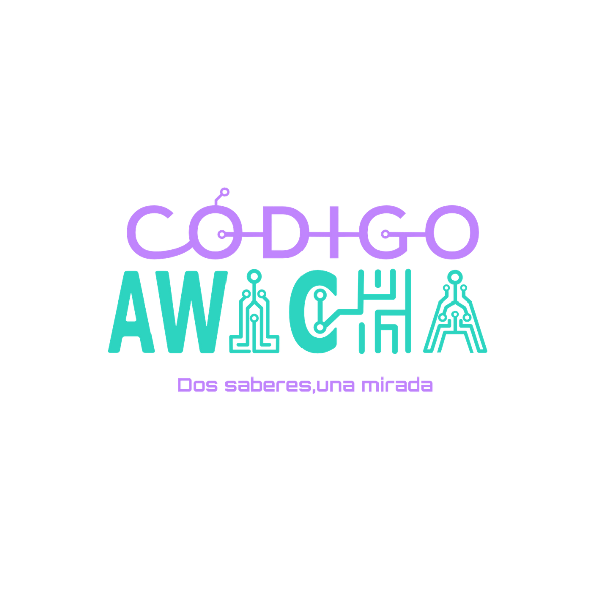

Dos códigos en mi vida
Por qué creé este espacio, y por qué quiero que seas parte. La historia de un sociólogo que empezó en informática y descubrió que el saber antiguo y el saber nuevo nunca estuvieron separados.
// TECNOLOGÍA E IA DESDE EL SABER POPULAR

Donde lo antiguo y lo sabio conversa con lo digital. Pensamos la inteligencia artificial y la tecnología desde lo nuestro. Sin miedo, con criterio.
// LO QUE VAS A ENCONTRAR
Lo que pasa en la tecnología y la IA, contado y analizado con criterio. Qué hay detrás de cada titular.
Becas, convocatorias, programas y recursos para formarse, buscarse y crecer. Lo práctico y generoso.
Herramientas y habilidades explicadas en lenguaje claro. El saber que la awicha pasaría de mano en mano.
Por qué creé este espacio, y por qué quiero que seas parte. La historia de un sociólogo que empezó en informática y descubrió que el saber antiguo y el saber nuevo nunca estuvieron separados.